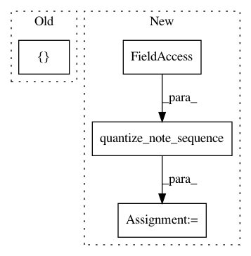

a146d001bf63734851d5a02c2b96d1ef29a61e96,magenta/music/melodies_lib_test.py,MelodiesLibTest,testFromNotesPolyphonic,#MelodiesLibTest#,201
Before Change
def testFromNotesPolyphonic(self):
testing_lib.add_quantized_track_to_sequence(
self.quantized_sequence, 0,
[(12, 100, 4, 16), (19, 100, 4, 12)])
melody = melodies_lib.Melody()
with self.assertRaises(melodies_lib.PolyphonicMelodyException):
melody.from_quantized_sequence(self.quantized_sequence,
After Change
testing_lib.add_track_to_sequence(
self.note_sequence, 0,
[(12, 100, 0.0, 10.0), (11, 55, 0.0, 0.50)])
quantized_sequence = sequences_lib.quantize_note_sequence(
self.note_sequence, self.steps_per_quarter)
melody = melodies_lib.Melody()
with self.assertRaises(melodies_lib.PolyphonicMelodyException):
melody.from_quantized_sequence(quantized_sequence,
In pattern: SUPERPATTERN
Frequency: 4
Non-data size: 4
Instances
Project Name: tensorflow/magenta
Commit Name: a146d001bf63734851d5a02c2b96d1ef29a61e96
Time: 2016-11-15
Author: curtis@thefjord.org
File Name: magenta/music/melodies_lib_test.py
Class Name: MelodiesLibTest
Method Name: testFromNotesPolyphonic
Project Name: tensorflow/magenta
Commit Name: a146d001bf63734851d5a02c2b96d1ef29a61e96
Time: 2016-11-15
Author: curtis@thefjord.org
File Name: magenta/music/melodies_lib_test.py
Class Name: MelodiesLibTest
Method Name: testFromNotesStepsPerBar
Project Name: tensorflow/magenta
Commit Name: a146d001bf63734851d5a02c2b96d1ef29a61e96
Time: 2016-11-15
Author: curtis@thefjord.org
File Name: magenta/music/sequences_lib_test.py
Class Name: SequencesLibTest
Method Name: testMultiTrack
Project Name: tensorflow/magenta
Commit Name: a146d001bf63734851d5a02c2b96d1ef29a61e96
Time: 2016-11-15
Author: curtis@thefjord.org
File Name: magenta/music/drums_lib_test.py
Class Name: DrumsLibTest
Method Name: testFromNotesStepsPerBar